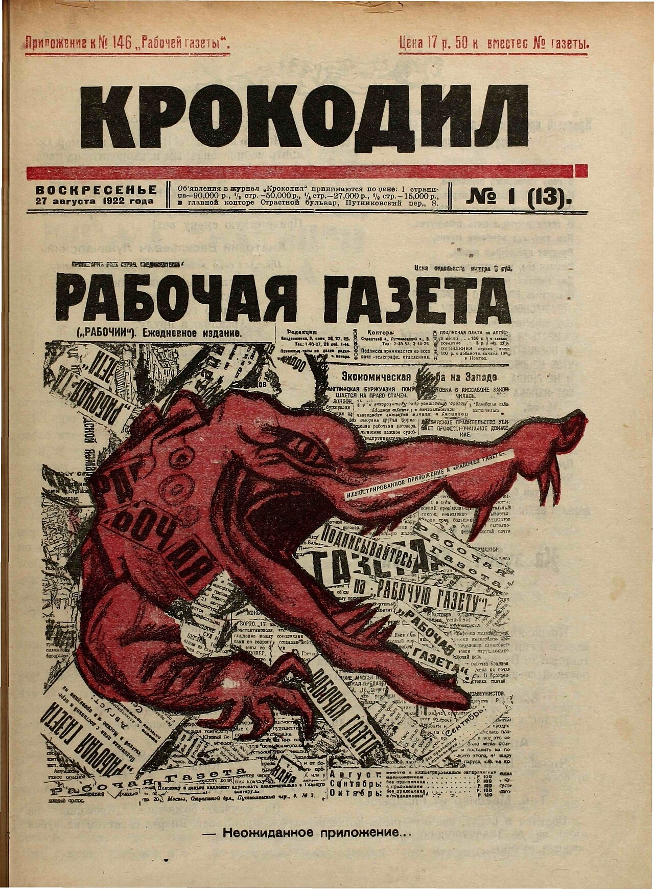
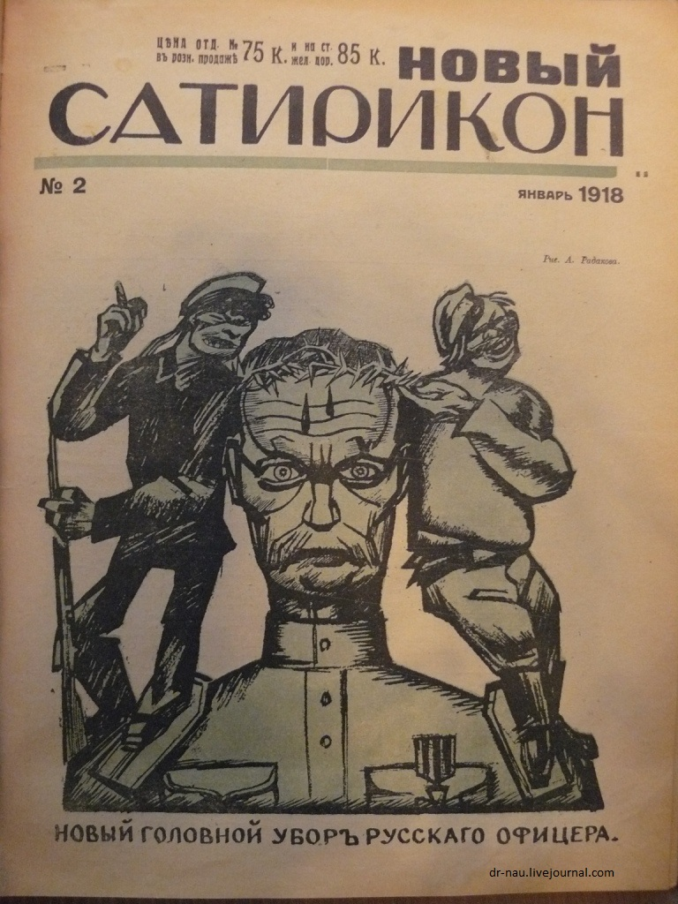
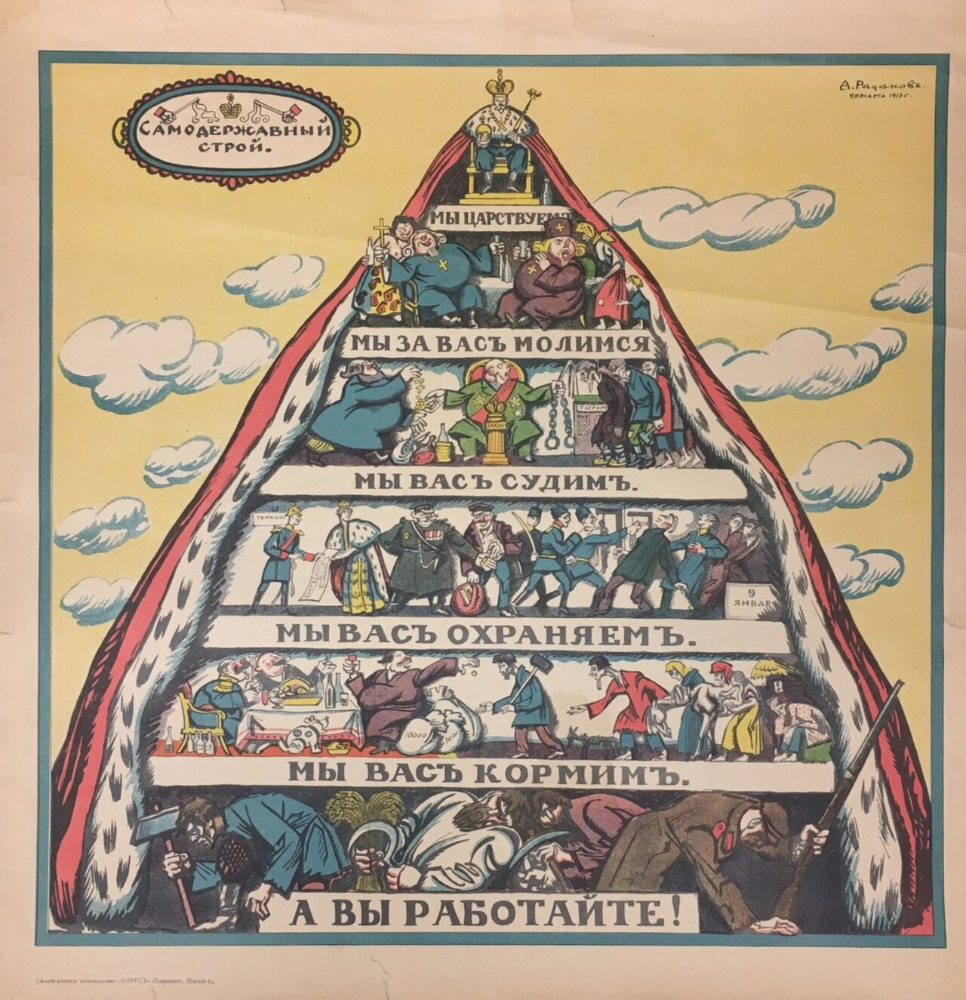
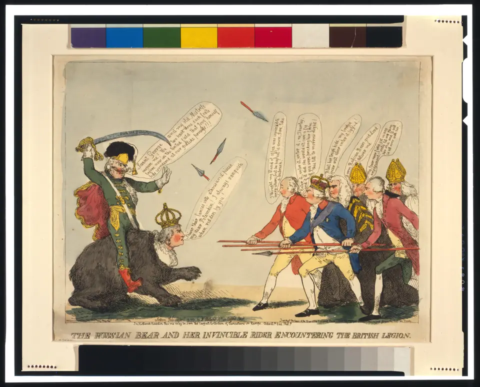
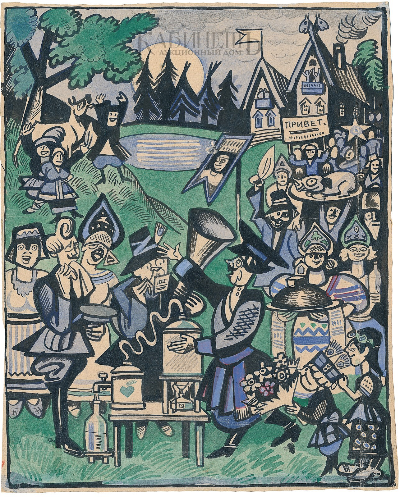

Зал 01
Смеясь и бичуя
Сатирический лубок и народная сатира XVII–XVIII веков.

Рисунок, который во время войны стоил дивизии.
Загружаем выпуск дня…
Сатирический лубок и народная сатира XVII–XVIII веков.

XIX век: рисунок приходит в журналы — «Осколки», «Стрекоза», «Искра».

«Сатирикон» и «Новый Сатирикон»: Ре-Ми, Чехонин, Радаков.

Окна РОСТА, Моор, Дени — сатира становится оружием.

Главный журнал страны, Кукрыниксы, фронтовой листок.

Жанр без жертвы: артисты, учёные, спортсмены.
Сатира о зарубежье: дипломатия и войны глазами наших художников.
Оттепель, застой, перестройка — сатира в рамках и вне их.
Цифровая эпоха: карикатура после бумаги.
Готовые маршруты по залам музея для урока в классе. Каждый урок — 15 или 35 минут: идём по экспонатам ссылками, три вопроса классу, домашнее задание и раздатка одним файлом.
Уроки собираются из принятых залов — правило «эталон-первый»: сначала один урок целиком на приёмку, затем тираж по предметам. Сейчас маршруты опираются на уже открытые январские выпуски.

Британская карикатура 1791 года: отделяем увиденное от авторской позиции.
Открыть расследование →Шесть листов — одна история победителя Европы.
Открыть расследование →
Силуэт, поза и одна черта — и человек узнаваем.
Открыть расследование →
От рисунка на камне до массового отпечатка.
Открыть расследование →
Темы, письма читателей и границы критики в одном выпуске.
Открыть расследование →Нажми на дату — откроется название выпуска и его хук. Заполненные дни ведут на готовые страницы.